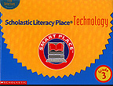

| Teaching for Tomorrow, Today |
Educational Media
Featuring Professor Mendoza
 |
 |  |
 |
Mendoza, Ruben G. 2001. Old San Juan: A Mission Media Project (Multimedia CD-ROM). Seaside: Institute of Archaeology.
Abbink, Emily. 1999. "The Case of the Missing Mission Courtyard." In CaliforniaChronicles September, 1999, Pps. 18-21. A Cobblestone Publication. Illustrations and maps by Ruben G. Mendoza.
Museum Education Project. 1999. Old Mission San Juan Bautista: An Educational Coloring Book. Seaside,California: Museum Education Project/CSUMB Institute of Archaeology.
Moyer, Richard, Lucy Daniel, Jay Hackett, Prentice Baptiste, Pamela Stryker, and Joanne Vasquez (Eds.). 1999. "Invitation to Science: Be a Scientist and How do ScientistsWork?" In Science . MacMillan/McGraw-Hill Edition. Pps. S2-S18. New York: McGraw-Hill/National Geographic Society.
Scholastic, Incorporated. 1998. Managing Information: Meet the Mentor (Video & CurriculumMaterials). Vanderbilt University (Adult) Literacy Program. New York: Scholastic Books Incorporated.
Scholastic, Incorporated. 1997. "Conozcamos al Mentor" (Video & Curriculum Materials). In Solares Bilingual Literacy Program: Logros, Volumen 2. New York: Scholastic Incorporated.
Scholastic, Incorporated. 1996. Time Detectives (Grade 3). New York: Scholastic Books Incorporated.
Scholastic, Incorporated. 1996. Meet the Mentor Video: Dr. Ruben Mendoza, Archaeologist (Video). New York: Terra Associates and Scholastic Incorporated
Scholastic, Incorporated. 1996. Scholastic Literacy Place Technology: Time Detectives CD-ROM. New York: Scholastic Incorporated.
Prentice-Hall, Incorporated. 1996. CHEMedia (Videodisc and Computer Simulation). Upper SaddleRiver, NJ: Prentice-Hall, Inc.
Prentice-Hall,
Incorporated. 1996. Challenge 10-1: Radiocarbon Dating of
Archaeological Artifacts (Exploration Student Manual, Unit 10: Nuclear,
Organic, and Biochemistry). To Accompany Chemistry: Connections to Our
Changing World. Upper Saddle River, NJ: Prentice-Hall, Inc.